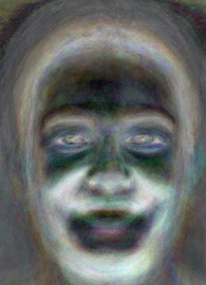

The first correspondence I wanted to build with a picture of Hugh jackman and Wolverine. They have never been seen in a room together and I think they look quite similar.
I used the project point correspondences tool given in the spec and used the Delauney mentioned in the lecture.
For the dissolve fraction and the morph fraction I experimented with several time equations, i ended up settling for the following quadratic:
time = t/frames
frac = s*time**2 + (1 - s)*time
With dissolve and warp s = 0.6, -0.2 respectively. (chosen experimentally)
traingle mesh corresponding traingle mesh
Part 2. Computing the "Mid-way Face""
To compute the midway face I created a function that finds the weighted average of the shape (based on the warp fraction), then applies the same triangulation to the new shape. Finally for each triangle T_m in the mid-way face I solved for the transformation matrix A s.t. A*T_m = T_i. Using this approach to solve for the midway face requires interpolation; I tried a handful of interpolation functions, including bilinear as was suggested, but ended up using nearest neighbor because it’s the fastest and has good quality. Finally to compute the mid-way face we simply cross dissolve the colors between the both mid-way transformation:
hughmorphed into the midway shape
wolverinemorphed into the midway shape
wolverinemidway shape + cross fademorphed into the midway shape
Part 3. The Morph Sequence
hugh - wolverineme - forestgeorge - me
Part 4. The "Mean face" of a population
average face shape of the whole population:
hugh - wolverinegeorge - me
Examples of morphing each of the faces in the dataset into the average shape:
1a2a3a
average faces
populationmorphed population
Bells, whistles and all things things
PCA Basis
With the same dataset I computed the PCA
Here are the top 5 eigenfaces. Very spooky
1a2a3a8a

8a
The top 5 faces capture a lot of information so they look like reasonable faces unlike the smaller eigenfaces which degenerate. I also tried my hand at projecting faces onto the eigenfaces (to get the weight) and then recovering them. The following are examples with the top 20 eigenfaces. Even with few eigenfaces a lot of essential information is recovered.
1a2a3a
Gender Bend
Change age/gender/ethnicity/smile/etc of my friend's face.Show morphing just the shape, just the appearance, and both.
1a2a
Roomate morph music video:
References
The hybrid images part of this assignment is borrowed from Derek Hoiem's Computational Photography class.
Information
This website contains transitions not captured by the pdf, spesificaly, the title image changes into a high gamma verison and then into the black and white threshold filter version.